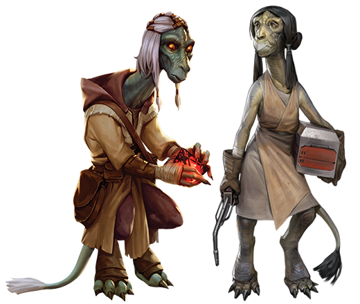

Cosian
cosian
Special Abilities: Cosians begin the game with one rank in Knowledge (Lore). They still cannot train Knowledge (Lore) above rank 2 during character creation.
Strong Backed: All Cosians have an encumbrance threshold of 10 + Brawn.
Soft-spoken and genial, the reptilian Cosians are seen as harmless or even befuddled by most who encounter them. Their shuffling gait and hunched posture combine with a soft voice and gentle demeanor to create the image of an elderly, even helpless or senile species—but nothing could be further from the truth. Cosians are shrewd thinkers with sharp minds and keen powers of observation. Those seeking wisdom often turn to a Cosian for advice, which is kindly given—though only when asked for; patience is a central virtue to them, and they often keep their judgments to themselves. When Cosians do make their way into the larger galaxy, it is often as curious observers and eager students. Their eyes brighten and their step quickens when encountering new beings or exploring unknown places. This can create a paradoxical sense of both childlike wonder and aged wisdom. To Cosians, any beings foolish enough to believe they have learned all the galaxy has to offer are doing themselves a great disservice. Cosians take each day as it comes, ready to appreciate all the subtle originality it has to offer.
Though they walk with a bent posture upon two clawed feet, when Cosians rise to their full height, they typically stand at around 1.8 meters tall due to the long neck that rises from their broad-shouldered back. Scales ranging from dusky gray-green to bright emerald cover their body, often fading with age. Both their head and long tail are crowned with tufts of hair, which can vary in color from midnight blue to silvery white. Their long faces end in a beaked mouth capped with a broad nose. Their large eyes are orange or yellow, ringed in bony ridges; they have the unique trait of blinking with eyelids that rise up from the bottom of their sockets. As they age, many Cosians grow a great beard of long white down from their beaked chin. The Nu-Cosian sub-species does not have the more common beaked mouth and walks in an almost completely hunched manner, but is capable of carrying great loads of weight upon its strong back. It is otherwise similar to its more common cousin.
Longer-lived than most other sentient species of the galaxy, Cosians are capable of reaching up to two hundred years of age. As they age, the color fades from their hair and scales and they begin to move more slowly, though they are still capable of great speeds in times of need. Because of their reptilian nature, Cosians adapt well to many environments. This makes them eager and hardy travelers capable of enduring extreme temperatures, though the cold does tend to bother them if exposure is prolonged.
Curiosity is of supreme importance to Cosians. They value learning for its own sake, and most are expected to choose an area of focused study early in their lifetime. This love of education is cultivated by Cosian elders, who encourage the young to seek wisdom in the experiences of others. By asking others about their experiences, Cosians gain both a sense of the galaxy at large and a respect for the wisdom of their elders. Older Cosians are held in the highest esteem by their communities, and each village is ruled by a council of the eldest living villagers. These elders are consulted when disputes arise. Although their word is often considered the final say in such matters, most elders encourage young Cosians to resolve their own conflicts through insight, introspection, and patient contemplation.
Children are equally valued by Cosians for an insight unfettered by experience. A child’s unique view on a situation is seen as a gift to all Cosian people, and while elders are respected, it is the young who are cherished. When a clutch of Cosian eggs hatch, the village usually holds a great celebration as new life and wisdom are brought into the world.
The verdant world of Cosia is found in the Deep Core. The only inhabited planet in the system of the same name, Cosia orbits a single star. It plays host to twin moons, Tebu and Tabu, which can be clearly seen in the night sky. The surface of Cosia is filled with massive trees set upon fields of seemingly endless rolling hills. The branches of the cosa tree produces palm leaves over one hundred meters in length. Cosia teems with wildlife ranging from insects with bright carapaces and wings to vicious predators that stalk the forest floor. Cosians are the only native sentient life. They make their home in villages built into the sides of the great cosa trees, rising high into the sky. These homes and halls are connected by winding stairs made of finely carved wood and walkways made of etched planks and cultivated vines.
Each village operates independently, so Cosia has no formal capital. The largest settlement, Nu-Cosa, is home to several thousand Cosians. Technology is integrated seamlessly with each village’s natural beauty, providing Cosians with many of the trappings available on most modern planets across the galaxy. However, Cosians have no formal starport of their own. Instead, several small starports and landing strips established by outsiders dot the landscape. The largest rises like a great industrial scar from the woodlands a few miles from Nu-Cosa and hosts the planet’s Imperial occupiers.
Cosians speak a trilling, chirping language aptly called Cosian. It mingles easily with the wild sounds of their homeworld and is often mistaken for the vocalizations of the planet’s native avians. Cosians are natural linguists, easily and eagerly learning Basic and other languages. This allows them to communicate with and explore the galaxy more readily. Many Cosians believe that when one understands the vocabulary of another species, one can more easily understand its nature. Many Cosians have a fondness for the languages of birds and beasts, learning bird calls and animal growls with an uncanny proficiency.
Cosians recognize the Force and rejoice when one of their people is shown to be gifted with it. For a Cosian, the Force offers both an opportunity for deeper understanding of all living beings in the galaxy and a chance for exploration denied to many of their kind. In the days of the Jedi Order, more than a few Cosians rose to the rank of Knight or even Master and were valued as teachers and instructors for their ability to remain open to the infinite nature of the Force. Cosians maintain an open-minded, childlike simplicity even into old age. While this meant many Force-sensitive Cosians were natural Consulars or Mystics, some became fierce Guardians who sought to protect and aid younglings and Padawans.
Cosians were early members of the Republic, believing its diversity and desire to resolve matters diplomatically aligned with their own values. In spite of this, their villages remained nearly untouched by galactic technology. Instead, they allowed for the construction of a few Republic starports well outside the bounds of their settlements so they could both maintain their society and benefit from the new ideas brought by the Republic. Under the Galactic Empire, the Cosian people have become quite isolationist, hoping to avoid the influence of Imperial dogma by clinging to their traditions and hoping for the day when respect for diversity will return to the galaxy.